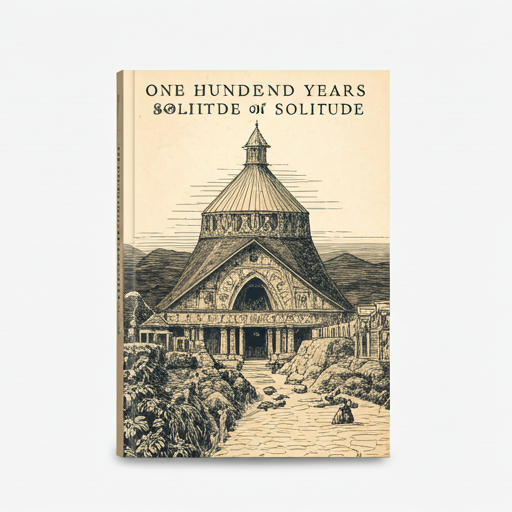

El Jardín Secreto
Una joven descubre un jardín abandonado que guarda secretos y magia, transformando su vida y la de
quienes la rodean.
Nuestro club de lectura te invita a explorar nuevos mundos, compartir
ideas y conectar con otros amantes de los libros. Cada mes, seleccionamos
un libro fascinante para discutir y disfrutar.
Una joven descubre un jardín abandonado que guarda secretos y magia, transformando su vida y la de
quienes la rodean.

El Gran Esteban
F. Scott Fitzgerald

Cien Años de Soledad
Gabriel García Márquez

Orgullo y Prejuicio
Jane Austen